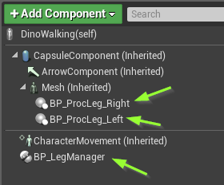
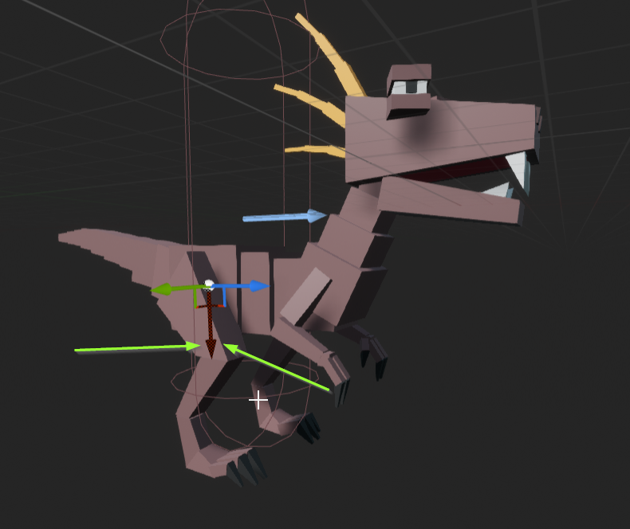
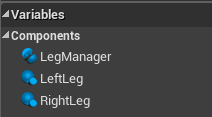
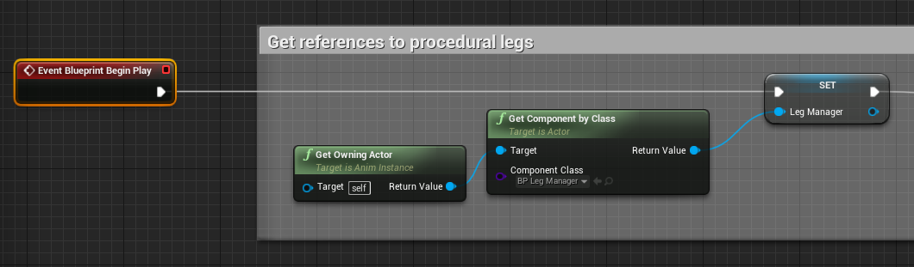
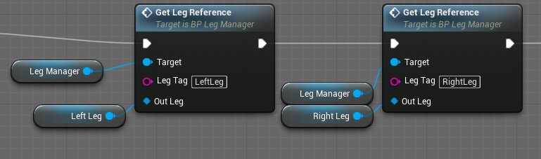
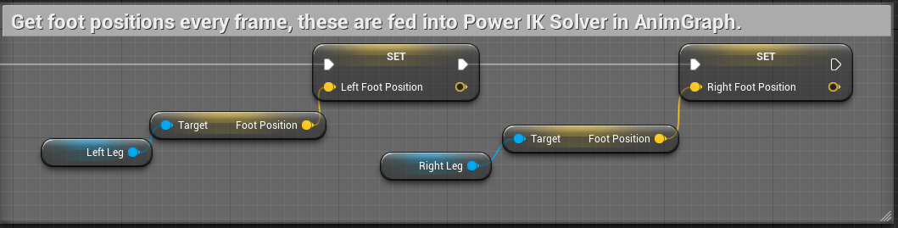
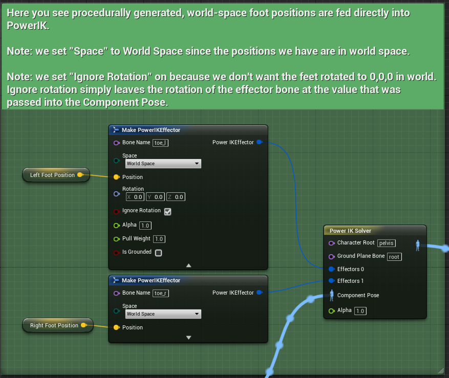
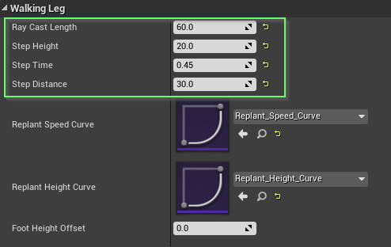

Bonus Procedural Animation Blueprint
Power IK is a generic tool that can be used for a multitude of purposes. We included a bonus set of blueprints to get you started generating procedural animation with Power IK.
What is Procedural Animation
Procedural animation simply means, “anything that isn’t pre-recorded keyframes”. This includes physics, IK and direct bone manipulation. Often these methods are mixed with keyframe animation to achieve dynamic and compelling behaviors that would otherwise be impossible using keyframes alone.

Procedural animation is gaining in popularity and it greatly benefits from a full body IK solver.
Typical methods attempt to algorithmically generate foot positions, or some high-level goal for the animation, and let IK and physics create the final pose. Using a regular single-chain IK solver, it is difficult to get the full pose to look realistic. Limbs can feel disconnected from each other and the rest of the body (because they are).
That’s where a full-body solver like Power IK can help you achieve more natural poses with less effort. With Power IK, you can set foot positions procedurally, and let the solver create a natural pose for the rest of the body.
Actor Setup
Inside Content/Bonus_ProceduralAnim you will find two blueprints, BP_Leg and BP_LegManager.
These blueprints exist solely to generate foot positions which are then fed into Power IK.
Add the Legs and Leg Manager to an actor:
- Add a BP_LegManager actor component to an actor.
- Add a BP_Leg for each leg of the actor. Position the scene component in the viewport at the location of the hips.
 - Orient the BP_Leg scene component in the actor Viewport so that +X points in the direction you want to ray-cast for foot positions.
 - Set a tag on each BP_Leg component so you can identify it later.
Animation Blueprint Setup
Now you need to get the foot positions from the BP_Leg components and feed them into Power IK in the animation graph.
Get references to the actor components in the animation blueprint:
-
Create 3 variables in the animation blueprint. One BP_LegManager object reference, and two BP_Leg references (or however many legs you have).
 -
On Begin Play, we need to get a reference to the Leg Manager component and store it. And do the same for the legs using the included Get Leg Reference function and the tag names that you added to each BP_Leg component.
 -
Add two vector-type variables to store the foot positions, and get them from the legs using the Blueprint Update Animation event. 
-
Drag these foot position vectors into the animation graph and connect them to the Position of a PowerIK Effector. Set the effector space to World Space. And plug it into a solver. 

You will of course need your character capsule to actually move if you hope to see the legs walking. The included project has a sample of a random patrol behavior tree which is enough to test procedural walking.
See the Dino_Walking sample blueprints for detailed comments on what exactly the BP_Leg and BP_LegManager are doing to generate foot positions procedurally.
Tune the Walking Behavior
Different sized characters will take larger or smaller steps at different speeds. Or you may want to even modulate a characters walking behavior depending on their state. Each BP_Leg has a Walking Leg settings category with options for adjusting all aspects of the gait behavior:
- Ray Cast Length: the distance from the BP_Leg scene component that the system will ray-cast to look for a target foot position. Increase this for larger characters to ensure they can reach the ground.
- Step Height: the maximum height in centimeters the foot is raised off the ground mid-stride.
- Step Time: the time in seconds it takes to make a step (from unplanting to replanting).
- Step Distance: the distance in centimeters to step between unplanting and replanting.

The Replant Speed Curve and Replant Height Curves can be modified to adjust the ease-in and ease-out of the foot position and height. The curve ranges are normalized from 0 to 1 which represents the time for a complete step (unplant to replant).
Get Creative!
The procedural walking blueprints are just a small sample of what’s possible with procedural animation when combined with a full-body IK solver like Power IK.
- Add More Legs: You could extend the BP_LegManager to support multiple sets of legs, where each set of legs is synchronized. This would open it up to support insects and arachnid gaits.
- Support Running: You could add support for procedural running by creating a mode that allows feet to unplant at the same time, within ‘tolerance’ ranges.
- Layer on Physics and Animation: Layer your procedural walking with procedural look-ats, secondary physics and keyframe animation to add believability and style.
- More Procedural Actions: You could add procedural turn on spot, jumping and even attacks. Power IK unleashes a lot of possibilities for creative expression with Unreal blueprint.